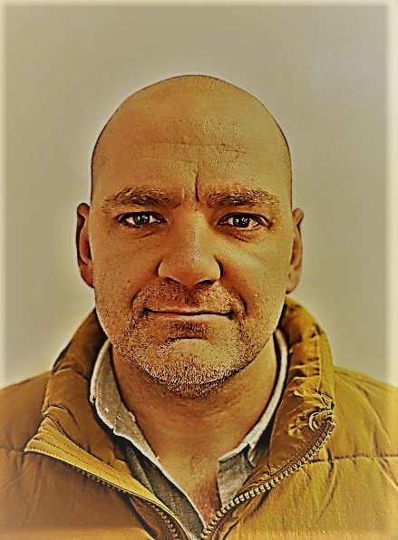

My Resume

Hobbies
Contact
Summary
Digital and IT professional with 20+ years’ experience in Enterprise Architecture, Digital Transformation, Technical Architecture, and IT Strategy. Extensive experience in the Supply Chain, Logistics and Manufacturing industry.
Currently leading the Enterprise Architecture practice within Imperial Africa, and part of the EXCO teams within D&IT. Part of the transformation team leading the technology integration between Imperial and DP World
Education
- International Executive Development Program - University of Cape Town (2023)
- Data Monetization - MIT Sloan Executive Education (2022)
- Digital Transformation Strategy - Boston University (2021)
- Masters of Business Administration - Regenesys (2018 - 2020)
- Postgraduate in Business Management - Regenesys (2017 - 2018)
- Bachelor is Technology: Computer Systems Engineering - Vaal University of Technology (2001 - 2004)
Work Experience
- Senior Director Technology Tranformation SSA - DP World (Sep 2021 - present)
- Enterprise Architecture
- Technology Governance
- Integration
- Digital Products Development
- Technology PMO
- Vice President Enterprise Architecture - Imperial (Feb 2021 - Aug 2023)
- Enterprise Architecture oversigh
- Data Architecture oversigh
- IT Executive - Imperial (Apr 2019 - Jan 2021)
- IT Infrastructure
- Service Desk
- EUC support
- Enterprise Architecture
- Enterrpise Architect - Imperial (Sep 2017 - Mar 2019)
- IT Infrastructure Executive - Imperial (July 2013 - Aug 2017)
- IT infrastructure
- Service Desk
- EUC support
Skills
- Technical Management
- Technical Architecture Design
- Operating Model Design
- Technology Organisation Design
- Portfolio Management
- Technology Governance
- Data Monetization
- Digital Tranformation Strategy
Credentials
- Chief Architect Forum Member